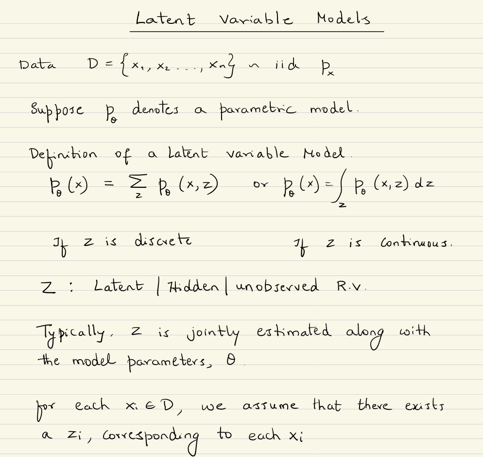
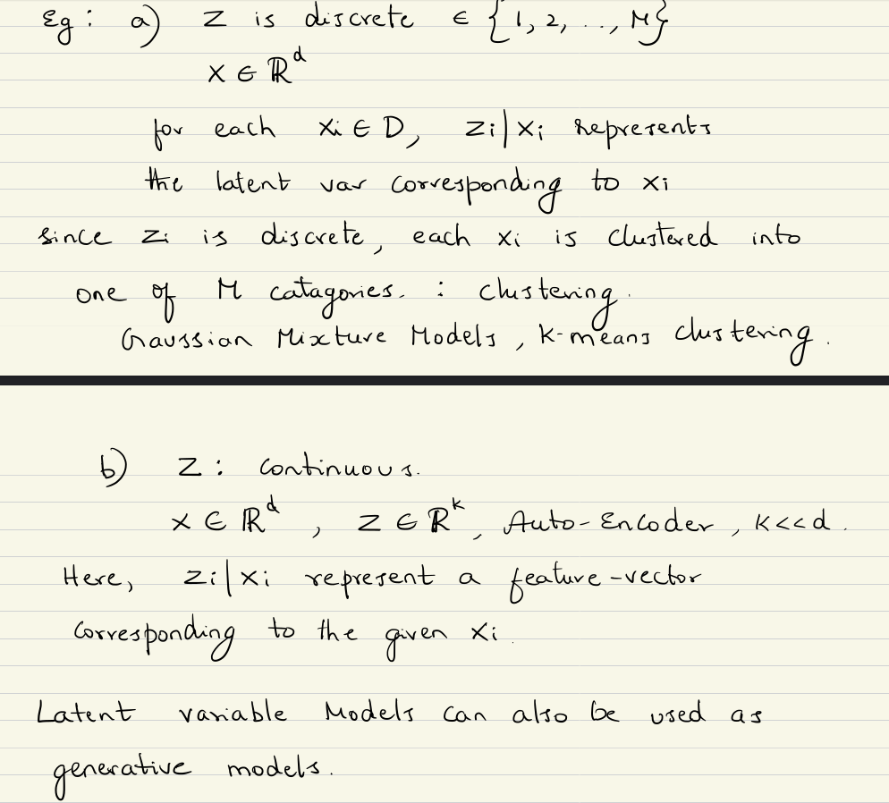
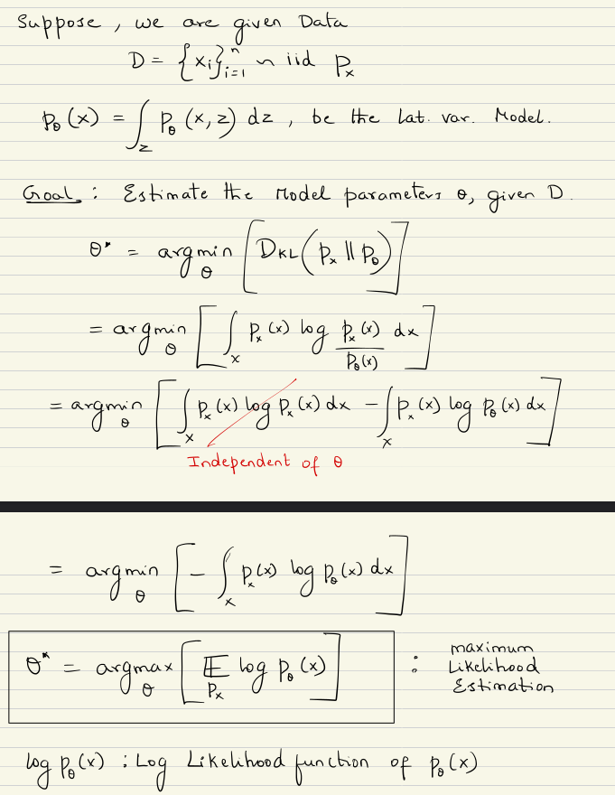
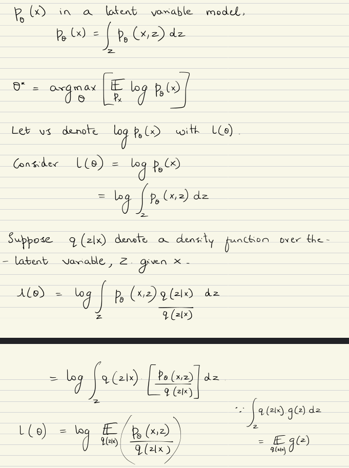
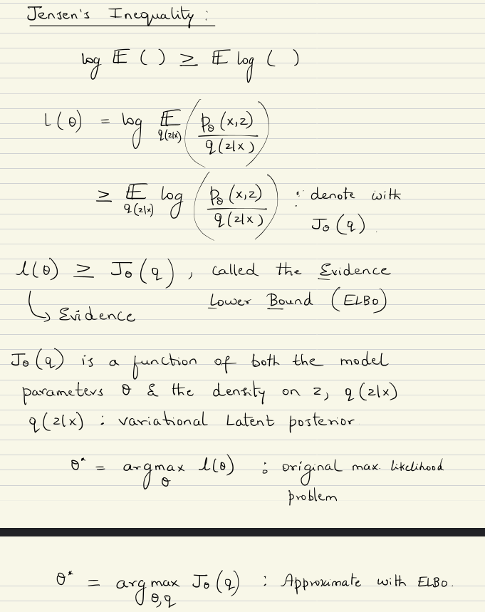
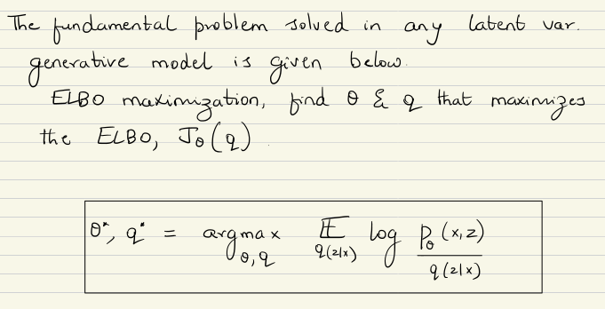
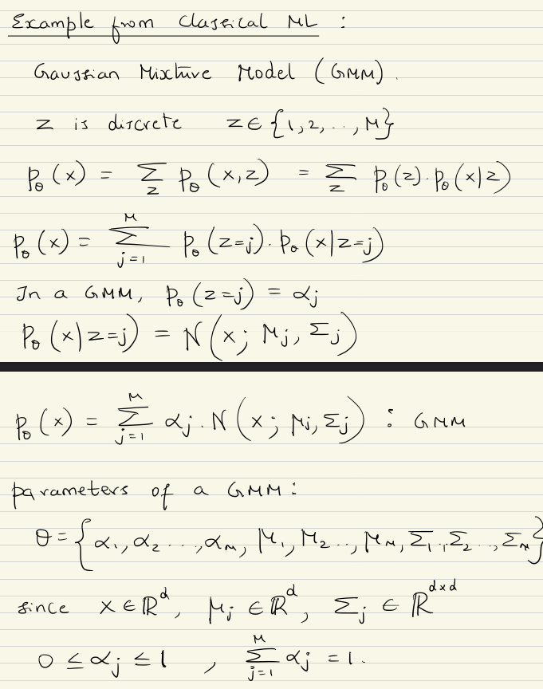
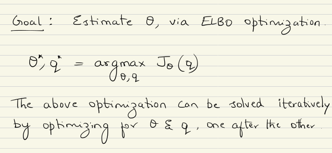
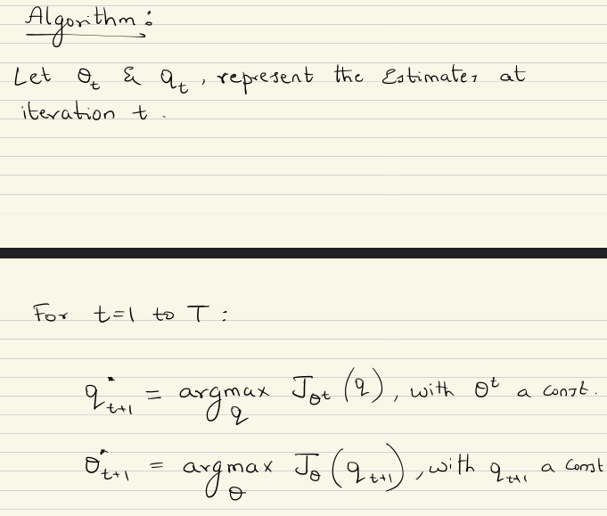

In this chapter, we'll explore how Variational Autoencoders work and different architectures that have been proposed









Let's consider a toy example:
One coin, one flip. Call the probability of heads \( \theta \).
\[ P(X=x) = \theta^x (1-\theta)^{1-x}, \quad x \in \{0,1\} \]Now, we extend to \(n\) independent flips:
\[ P(X_1=x_1, X_2=x_2, \ldots, X_n=x_n) = \prod_{i=1}^{n} \theta^{x_i}(1-\theta)^{1-x_i} \] \[ = \theta^{\sum_{i=1}^{n} x_i} (1-\theta)^{n - \sum_{i=1}^{n} x_i} \] \[ \boxed{ \mathcal{L}(\theta) = P(\text{data} \mid \theta) = \theta^{h}(1-\theta)^{t} } \]where \(h\) is the number of heads and \(t\) is the number of tails. (h + t = n)
Now, there are two coins, A and B:
\( \theta_A = P(\text{Heads} \mid \text{Coin A}) \)
\( \theta_B = P(\text{Heads} \mid \text{Coin B}) \)
We run 5 experiments. In each experiment, we grab a coin, note it down then, we flip the coin 10 times and observe the outcome:
| Exp. \(i\) | Coin \(z_i\) | 10 Flips | Heads | Tails |
|---|---|---|---|---|
| 1 | \(A\) | H T H H H T H H T H | 7 | 3 |
| 2 | \(B\) | T H T T T T H T T T | 2 | 8 |
| 3 | \(A\) | H H H H T H H H T H | 8 | 2 |
| 4 | \(B\) | T H T T T T H T T T | 2 | 8 |
| 5 | \(A\) | H T H H H T H H T H | 7 | 3 |
Log-Likelihood: \(\log p(x \mid \theta)\)
\[ \log p(x \mid \theta) = \sum_{i=1}^n \log p(x_i \mid \theta) \] \[ \log p(x \mid \theta) = \sum_{i=1}^n \log p(x_i \mid z_i, \theta) \] \[ \ell(\theta_A,\theta_B) = \underbrace{ \sum_{i:\, z_i=A} \left[ h_i \log \theta_A + t_i \log(1-\theta_A) \right] }_{\text{involves only }\theta_A} + \underbrace{ \sum_{i:\, z_i=B} \left[ h_i \log \theta_B + t_i \log(1-\theta_B) \right] }_{\text{involves only }\theta_B} \]Maximizing each term independently gives the MLEs:
\[ \boxed{ \hat{\theta}_A = \frac{\sum_{i:\,z_i=A} h_i} {\sum_{i:\,z_i=A}(h_i+t_i)} } \] \[ \boxed{ \hat{\theta}_B = \frac{\sum_{i:\,z_i=B} h_i} {\sum_{i:\,z_i=B}(h_i+t_i)} } \]Now, suppose we repeat the same experiment, but this time we do not know which coin was used in each experiment.
The parameters remain:
\( \theta_A = P(\text{Heads} \mid \text{Coin A}) \)
\( \theta_B = P(\text{Heads} \mid \text{Coin B}) \)
However, the coin identity \(z_i\) is now hidden.
| Exp. \(i\) | Coin \(z_i\) | 10 Flips | Heads | Tails |
|---|---|---|---|---|
| 1 | ? | H T H H H T H H T H | 7 | 3 |
| 2 | ? | T H T T T T H T T T | 2 | 8 |
| 3 | ? | H H H H T H H H T H | 8 | 2 |
| 4 | ? | T H T T T T H T T T | 2 | 8 |
| 5 | ? | H T H H H T H H T H | 7 | 3 |
Since \(z_i\) is hidden, we cannot separate the data into Coin A and Coin B as before.
\[ \pi_A = P(z=A), \qquad \pi_B = P(z=B), \qquad \pi_A = \pi_B = 0.5 \]Marginalize over \(z_i\)
\[ P(x_i \mid \theta) = \sum_{z_i \in \{A,B\}} P(x_i, z_i \mid \theta) \] \[ \begin{aligned} P(x_i \mid \theta) &= \underbrace{ \pi_A\,\theta_A^{h_i}(1-\theta_A)^{t_i} }_{\text{if Coin A}} + \underbrace{ \pi_B\,\theta_B^{h_i}(1-\theta_B)^{t_i} }_{\text{if Coin B}} \end{aligned} \] \[ \boxed{ \ell(\theta) = \sum_{i=1}^{5} \log\left( \pi_A\,\theta_A^{h_i}(1-\theta_A)^{t_i} + \pi_B\,\theta_B^{h_i}(1-\theta_B)^{t_i} \right) } \]Our goal is still to estimate
\[ \hat{\theta} = (\hat{\theta}_A,\hat{\theta}_B) = \arg\max_{\theta_A,\theta_B} \ell(\theta) \] \[ \frac{\partial \ell(\theta)}{\partial \theta_A} = \sum_{i=1}^{5} \frac{ \pi_A \left( h_i\theta_A^{h_i-1}(1-\theta_A)^{t_i} - t_i\theta_A^{h_i}(1-\theta_A)^{t_i-1} \right) }{ \pi_A\theta_A^{h_i}(1-\theta_A)^{t_i} + \pi_B\theta_B^{h_i}(1-\theta_B)^{t_i} } = 0 \]Problem: The logarithm is applied to a sum, so the derivatives do not simplify into a closed-form solution.
Hence, maximizing \(\ell(\theta)\) directly becomes an intractable optimization problem.
This is precisely where the Expectation-Maximization (EM) algorithm is used.